为什么需要时钟
数字电路分两类：一类随输入变，一类要等时钟脉冲。单片机里的模块属于后一类。
两种数字电路
组合逻辑由与门、或门、非门搭成，没有记忆元件。输入一变，输出跟着变，不需要谁来打拍子。
时序逻辑里含触发器这类记忆元件。触发器看的是边沿，不是电平：CP 端来一个脉冲，状态才更新一次。
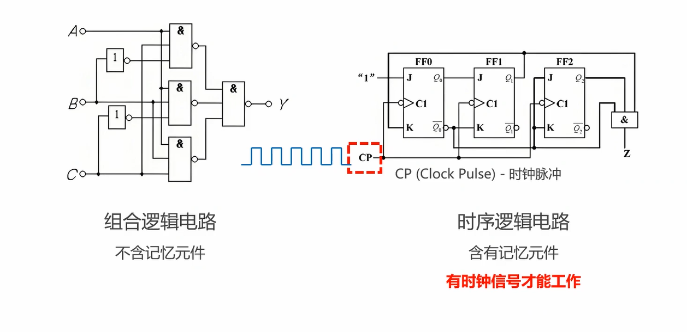
时钟就是节拍
单片机里的每个模块（GPIO、定时器、串口、ADC）内部都有寄存器，寄存器是记忆元件，所以它们全都属于时序逻辑。要让它们工作，就得把时钟送进去。
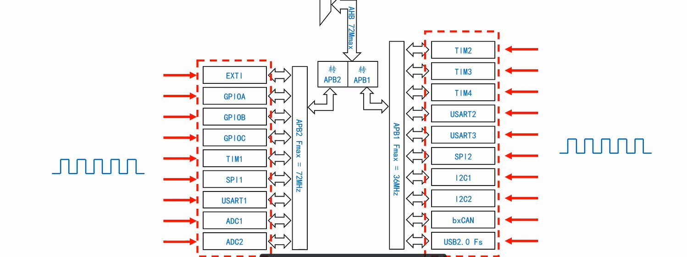
频率：每秒多少个节拍。8MHz 就是每秒八百万拍，拍子快，电路就快。
和电脑对照着看
单片机的内部结构和一台电脑几乎一一对应，先看这张对照。
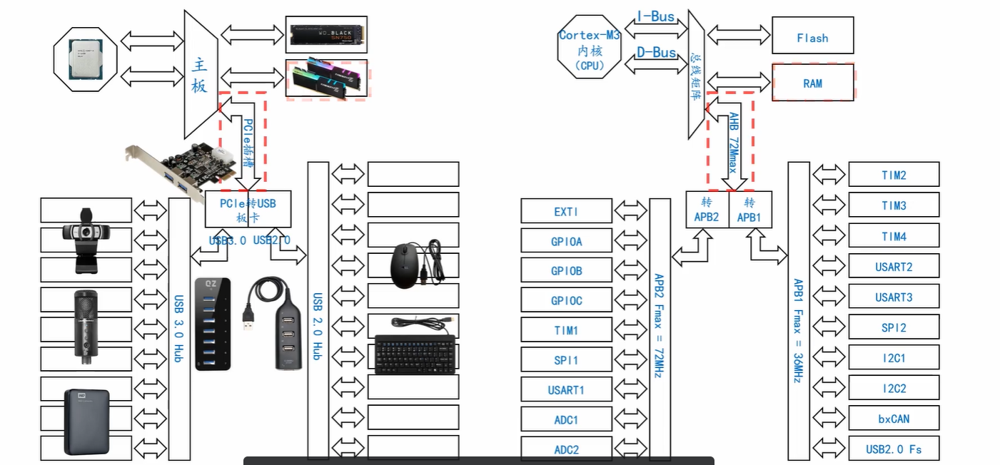
| 电脑 | STM32 | 作用 |
|---|---|---|
| 主板 | 总线矩阵 | 所有部件互连的地方 |
| CPU | Cortex-M3 内核 | 执行代码 |
| 硬盘 | Flash | 存程序，掉电不丢 |
| 内存条 | RAM | 存运行时的数据，掉电即失 |
| PCIe 插槽 | AHB 总线 | 连高速设备的主干 |
| PCIe 转 USB 板卡 | APB2 / APB1 转换桥 | 把高速总线转成低速外设总线 |
| USB 3.0 Hub | APB2 总线 | 挂中高速外设 |
| USB 2.0 Hub | APB1 总线 | 挂低速外设 |
叫总线就有带宽上限，STM32F103 这三条各有各的数：
| 总线 | 上限 | 在时钟树上的位置 |
|---|---|---|
| AHB | 72 MHz | 直连内核、Flash、RAM、DMA |
| APB1 | 36 MHz | 由 AHB 经转换桥分出，挂低速外设 |
| APB2 | 72 MHz | 由 AHB 经转换桥分出，挂高速外设 |
APB1 的上限：只有 AHB 的一半。所以后面把 SYSCLK 拉到 72MHz 时，APB1 必须除以 2。
时钟树的四层
时钟从产生到送达，中间要经过加工、运算和分配。这条链路长得像一棵树，所以叫时钟树。
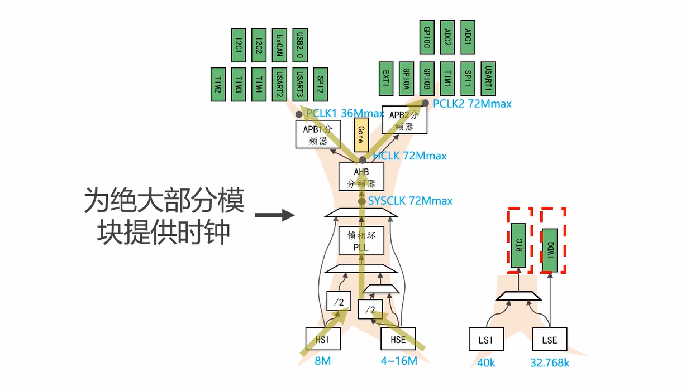
- 树根 · 时钟源
- 信号从哪来：HSI、HSE、LSI、LSE，以及它们倍频出来的 PLL 输出。
- 树干 · SYSCLK
- 系统时钟，全片的基准节拍，最高 72MHz。
- 树枝 · 分频器
- AHB、APB1、APB2 三处分频，把树干切成不同频率分给不同总线。
- 树叶 · 模块
- GPIO、定时器、串口、ADC 等等，各自收下属于自己的那一拍。
树根：四种时钟源
按“高速 / 低速”和“内部 / 外部”两个维度交叉，正好四种。
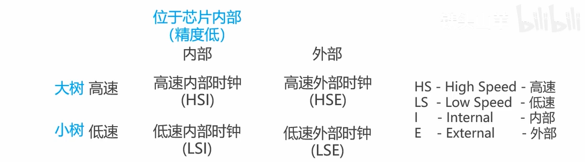
| 时钟源 | 频率 | 来源 | 用途 |
|---|---|---|---|
| HSI 高速内部 | 8 MHz | 芯片内置 RC 振荡器 | 上电默认，不用外接 |
| HSE 高速外部 | 4 ~ 16 MHz | 外接晶振（板上是 8MHz） | 经 PLL 倍频到 72MHz 的主路 |
| LSI 低速内部 | 40 kHz | 芯片内置 | 独立看门狗、RTC 备选 |
| LSE 低速外部 | 32.768 kHz | 外接晶振 | RTC 实时时钟 |
外部晶振长什么样
内部时钟源不用外接元件，成本低，精度差（RC 振荡受温度影响）。外部时钟源要外接晶振，精度高，成本也高一点。HSE 和 LSE 都属于后者。
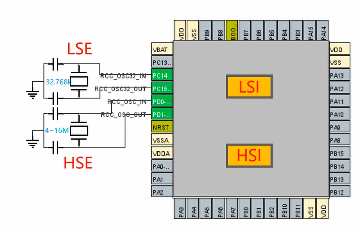
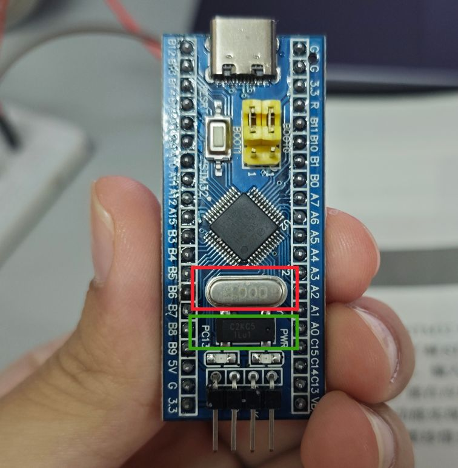
树干：SYSCLK 与 PLL
树根出来的信号一般太慢，要先加工一次，这活儿归锁相环 PLL。
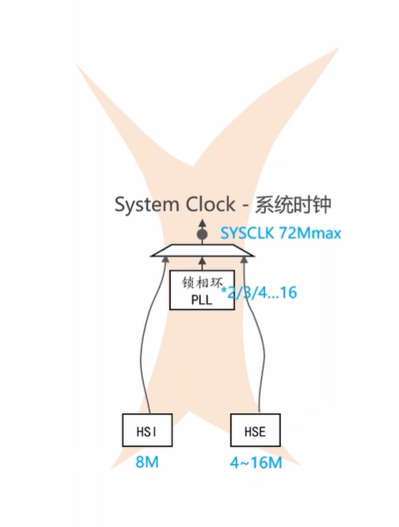
SYSCLK 有三个来源：树根处的 HSI、HSE，或者经过倍频的 PLL 输出。想让 8MHz 的晶振跑出 72MHz，只能走 PLL。
PLL 前面是一个三选一的选择器：
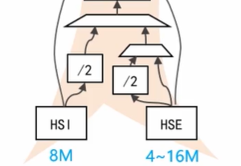
72 是怎么来的：HSE 8MHz 乘倍频系数 9 得 72MHz。实验里那个倍频系数填的就是 9。
树枝：分频器
72MHz 的树干不能直接喂给所有外设，得往下分。分频器做的是除法。
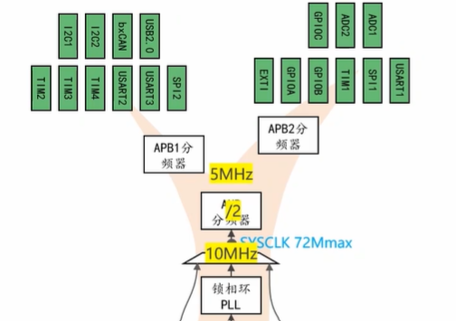
第一根大树枝是 AHB。SYSCLK 过 AHB 分频器之后得到 HCLK，最高 72MHz；HCLK 再往下分出 APB1 和 APB2 两根树杈。
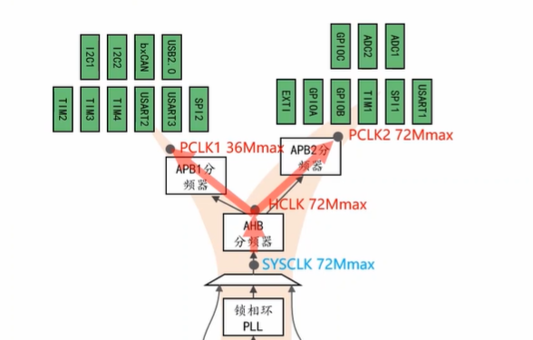
| 节点 | 来自 | 上限 | 喂给谁 |
|---|---|---|---|
| SYSCLK | HSI / HSE / PLL | 72 MHz | 整棵树的起点 |
| HCLK | SYSCLK 经 AHB 分频 | 72 MHz | 内核、AHB 总线、内存、DMA |
| PCLK1 | HCLK 经 APB1 分频 | 36 MHz | APB1 上的外设 |
| PCLK2 | HCLK 经 APB2 分频 | 72 MHz | APB2 上的外设 |
低速树是另一棵树：LSI 和 LSE 不走这条主干，单独供给 RTC 和独立看门狗 IWDG。实时时钟图的是准，32.768kHz 拿 2 的 15 次方一除正好是一秒。
树叶：模块
信号走完这一路，最后落到一个个具体的外设上。
挂在 APB2 上的
GPIOA / GPIOB / GPIOC、EXTI、TIM1、SPI1、USART1、ADC1 / ADC2。
挂在 APB1 上的
TIM2 / TIM3 / TIM4、USART2 / USART3、SPI2、I2C1 / I2C2、bxCAN、USB 2.0 FS。
“给某个外设配时钟”，就是在树上挑一条路，并定下每一级除多少。CubeMX 的时钟页因此是连动的：改一个分频系数，下游一串频率跟着变。
实验：8MHz 到 72MHz
同一段点灯代码，先让 HCLK 跑 8MHz，再开到 72MHz，看灯闪得快了多少。
盯住 HCLK，是因为 AHB 这根最粗的树枝上挂着 Cortex-M3 内核，代码都由内核执行：HCLK 多快，代码就跑多快。
第一步，8MHz
新建工程打开时钟页，HCLK 默认 8MHz（来自内部 HSI），即每秒 800 万条指令，实测会略快一点。
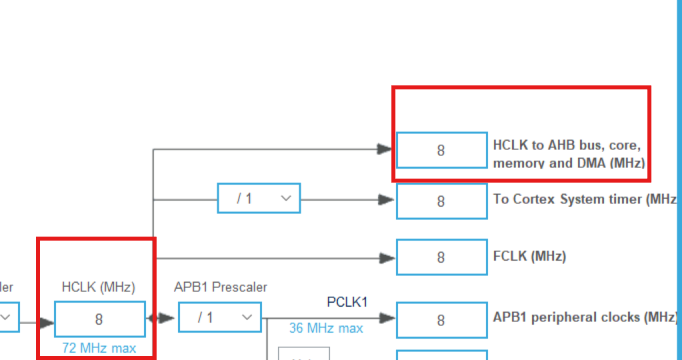
找到 PC13（板载 LED 就在这个脚上），设为 GPIO_Output，模式选开漏，最大输出速度选低速，初始电平选高。开漏配初始高电平，上电时灯是灭的。
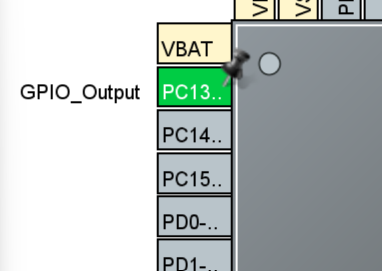
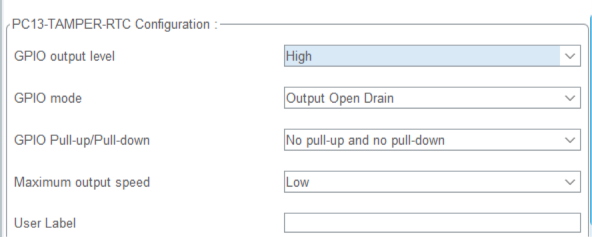
代码里没用 HAL_Delay，改用空循环耗时间，耗时就跟主频挂上了钩：主频越高，同样次数的循环越快。
while (1)
{
uint32_t i;
// 点亮板载 LED
HAL_GPIO_WritePin(GPIOC, GPIO_PIN_13, GPIO_PIN_RESET);
// 空转 100 万次（8MHz 下约 1 秒）
for (i = 0; i < 1000000; i++);
// 熄灭板载 LED
HAL_GPIO_WritePin(GPIOC, GPIO_PIN_13, GPIO_PIN_SET);
// 同样再空转 100 万次
for (i = 0; i < 1000000; i++);
}第二步，72MHz
在左侧分类里选 System Core → RCC（Reset & Clock Controller，复位和时钟控制器），时钟源在这儿配。
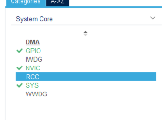
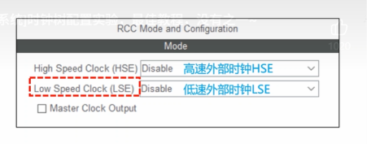
点开 High Speed Clock (HSE)，有两个选项：
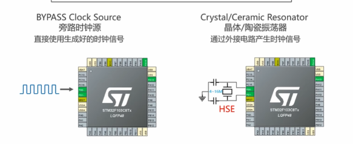
选哪个：板上焊着晶振，选 Crystal/Ceramic Resonator。旁路是给外部有源晶振用的，接法不同，选错不起振。
选完引脚图上 PD0 和 PD1 变绿，标上 RCC_OSC_IN / RCC_OSC_OUT：这两个脚从此归晶振，不能当普通 IO 用。
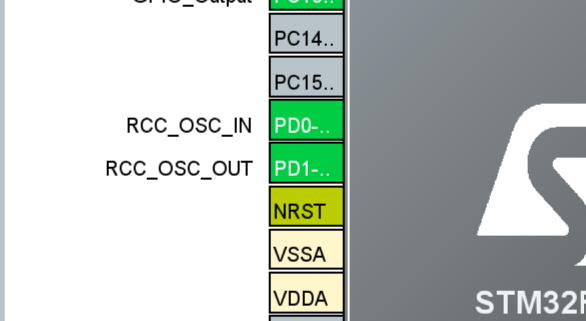
接着回到时钟页，把 PLL 的输入选成 HSE，倍频系数填 9，再把 SYSCLK 的来源选成 PLL：
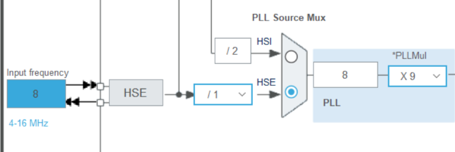
最后配三条树枝：AHB 分频 1（保持 72MHz）、APB1 分频 2（72 ÷ 2 = 36MHz，刚好是上限）、APB2 分频 1（还是 72MHz）。
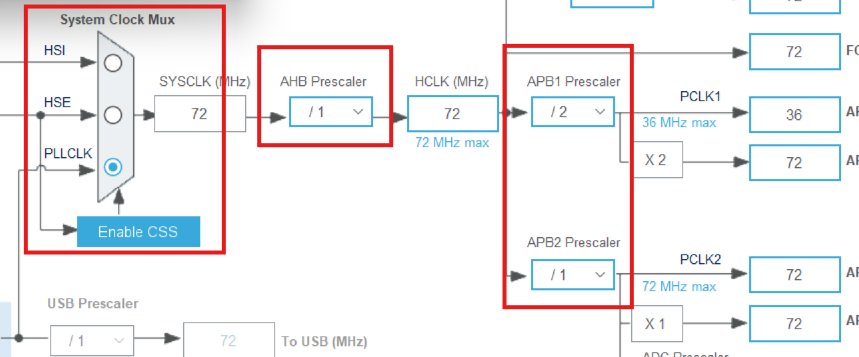
两次对比
重新生成代码烧进去，肉眼看得出差别：空循环的次数没变，每次循环花的时间只剩原来的九分之一。
| 项目 | HCLK = 8MHz | HCLK = 72MHz |
|---|---|---|
| 时钟源 | HSI（内部 8MHz） | HSE 8MHz × PLL 9 |
| 每秒指令数 | 约 800 万 | 约 7200 万 |
| 100 万次空循环 | 约 1 秒 | 约 0.11 秒 |
| APB1 / APB2 | 8 / 8 MHz | 36 / 72 MHz |
| LED 观感 | 慢悠悠地亮灭 | 快到接近闪频 |
速查
| 节点 | 上限 | 备注 |
|---|---|---|
| SYSCLK | 72 MHz | 来自 HSI、HSE 或 PLL |
| HCLK | 72 MHz | 决定内核执行速度 |
| PCLK1 | 36 MHz | APB1，SYSCLK 满速时应除以 2 |
| PCLK2 | 72 MHz | APB2，可以不分频 |
容易踩的坑
- HSE 一启用，PD0 / PD1 就没了。它们被分配给晶振，再当 GPIO 用会冲突。
- APB1 不能除以 1。SYSCLK 到 72MHz 时，APB1 直接接上去就是 72MHz，超过 36MHz 的上限。
- 旁路模式和晶体模式接法不同。板上焊的是晶振，选 Crystal/Ceramic Resonator；选成旁路不起振，PLL 也就锁不上。
- 低速树别混进来。RTC 和 IWDG 用的是 LSI / LSE，跟 SYSCLK 这条主干没有关系。
- 频率一变，软件延时跟着变。空循环、软件延时都按主频算，主频一改就得重算；要稳定计时用定时器。